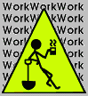

 Like all pages circa 1995, this page was constantly under construction.
A blank slate is always terrifying for me to write on.
What do I say that you haven't seen on a thousand other web pages... what should I write to catch your interest above a billion other pages all vieing for your 20 seconds before you press the right arrow to go back from whatever search led you here.
The answer is nothing. I could put this page with a thousand naked images, whirling graphical images, or exciting java applets and you would just pass this page like so many others.
So in the end, I have to face the cold hard fact that my primary audience is myself. So with that in mind, bare with me while I try to find that being who I am contemplating.
Anyway, I no longer have a blank slate, and can get back to work.
Here is where I give you a quick rundown of what I have here at SmoogeSpace.